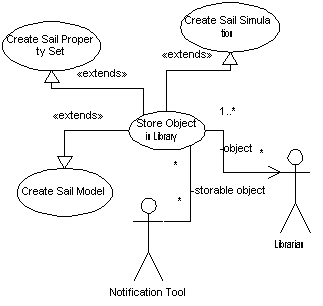

|
|
SailAway Project |
| Diagram |  |
|---|---|
| Name | Store Object in Library |
| Iteration | Finished |
| Summary | Any time a storable object gets changed by the user or by the System, the System will attempt to save it in a local or remote library. If scheduling is configured for use, the object will be stored in the local library and marked for storage in a remote library at a later date. |
| Basic Course of Events |
|
| Alternative Paths |
|
| Exception Paths |
If the system tries to store an object at step 3 or alt step 2, and the
registered library reports a problem with the completion of the storage
task, the system will hunt for another registered libary and issue the task
request again.
If the system tries to store an object and all remote libraries report problems, the system will revert to scheduling and save the object to a local library. It will also send a notification to the user who issued the command, and then proceed without further input. |
| Extension Points | . |
| Trigger | Any change to a storable object will raise a flag signalling the System to store it in the Library. |
| Assumptions |
For a remote library to be used, the user must have a functional internet
connection.
For a local library to be used, the user must have sufficient storage space to hold the Sail. |
| Preconditions | A storable object must be created or altered. |
| Postconditions | A return receipt from the library will signify the success or failure of the attempt to save the object to a Library. |
| Related Environment Rules | 3, 4, 5 |
| Author | Dr Alfred W Differ |
| Date |
2002/01/30 - Facade 2002/01/30 - Filled 2002/02/08 - Focused 2002/02/15 - Finished |